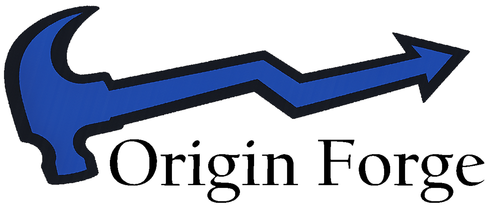

Power BI Dashboards
Build reports and dashboard experiences that help teams understand performance, monitor operations, and make better decisions.
Analytics • Automation • Business Intelligence
Origin Forge helps organizations turn messy workflows, disconnected reporting, and manual processes into clear dashboards, useful automation, and scalable decision tools.

Services
Build reports and dashboard experiences that help teams understand performance, monitor operations, and make better decisions.
Reduce repetitive work with Power Automate and connected business processes that move faster and break less often.
Create lightweight internal tools for data entry, approvals, tracking, and process management without overbuilding.
Bring together SharePoint, Teams, Excel, SQL, and other business sources into one usable reporting and workflow layer.
Portfolio
This section gives you a place to feature projects, case studies, or writeups. For now these can be simple placeholder cards, and later each one can link to its own page.

Built a multi-page Power BI dashboard using the Brazilian Olist dataset to analyze revenue trends, delivery performance, customer satisfaction, and purchasing behavior. Designed with an executive overview plus drill-through detail pages for deeper analysis.
Read case studyExample project summary goes here. Replace this with a short client problem, what you built, and what changed as a result.
Read case studyAdd a project here about consolidating Excel reporting, cleaning up Power BI models, or creating reusable business reporting.
Read case studyApproach
We focus on useful systems, not bloated ones. The goal is to help clients move from manual work and scattered reporting to something clear, maintainable, and valuable.
Start with a targeted solution. Prove value quickly. Then expand where it makes sense.
Contact
Need help with dashboards, automation, data cleanup, or internal tooling? Reach out and we can start with a focused conversation.